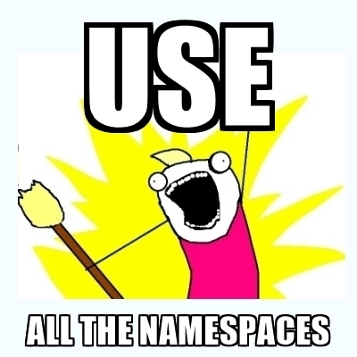

Platform.sh
The Container is a Lie!
Presented by Larry Garfield (@Crell)
@Crell

- Director of DX, Platform.sh
- PHP-FIG Core Committee
implements Huggable
(Credit: https://www.flickr.com/photos/usoceangov/5369581593)
(Credit: http://www.bbc.com/)

The first lie
"Processes"
Operating System
"Software that manages software"
"Scheduler"
- Coordinates with CPU
- Manages "context switching"
- Swap out Program Counter
Operating system
Multiple cores?
Multiple threads?
Multiple Program Counters!
"Process"

Processes
- Know about each other
- Communicate with each other
- Get the same system info from OS
- Spawn new processes
- Exist in a hierarchy
Virtual memory
(Credit: https://www.flickr.com/photos/sebleedelisle/3519503529)
*

Namespaces
- Linux can tell different lies
- Bundle processes together
- Different lie for each bundle
UTS Namespace
sethostname(), setdomainname(), and uname()
Process Namespace
What about /proc?
Mount Namespace
- super-chroot
- New "root node"
- File systems can be an image on disk
Mount Namespace
Network namespace
Physical devices
- Physical hardware
- Cannot be namespaced
Virtual devices
- More lies!
- Only one namespace
- Can create in pairs
Network namespace
User namespace
Processes have user and group
Affects access control
User namespace
- Namespace-local user
- Map local user to global user
- ... even root
User namespace
A process can be local-root!
Control Groups
The CGroup is not a lie!
Scheduler tweaking
Control Group hierarchy
- Separate from process hierarchy
- Nodes with "controllers"
- Tracking, auditing, capping
Control Groups
Can you use multiple namespaces?
Yes!

Set of processes that...
- Know of only each other
- Have a root user
- Have their own file tree
- Have their own network config
- Have their own hostname
- Have no way out of that box
- Have a restricted finite set of resources
Let's call it a "Container"
Coarser APIs
Orchestration
Read-only containers
- Load once, run multiple
- No write collisions
- Trivial overhead
Run anywhere?

(Credit: https://www.architecturendesign.net/22-most-beautiful-houses-made-from-shipping-containers/)
Static compiler for your entire system
A tale of two containers

- Built on LXC
- Nested Squashfs
- Integrated orchestration

#!/bin/bash
- Base OS squashfs
- Application squashfs
- RAMdisk for config
- Network mounted user files
Few processes
$ ps axf
PID TTY STAT TIME COMMAND
1 ? Ss 0:06 init [2]
72 ? Ss 0:06 runsvdir -P /etc/service log: .................................................................
78 ? Ss 0:00 \_ runsv ssh
105 ? S 0:00 | \_ /usr/sbin/sshd -D
2516 ? Ss 0:00 | \_ sshd: web [priv]
2518 ? S 0:00 | \_ sshd: web@pts/0
2519 pts/0 Ss 0:00 | \_ -bash
2605 pts/0 R+ 0:00 | \_ ps axf
79 ? Ss 0:00 \_ runsv nginx
99 ? S 0:00 | \_ nginx: master process /usr/sbin/nginx -g daemon off; error_log /var/log/error.log; -c /
104 ? S 0:00 | \_ nginx: worker process
80 ? Ss 0:00 \_ runsv newrelic
81 ? Ss 0:00 \_ runsv app
89 ? Ss 0:22 \_ php-fpm: master process (/etc/php/7.2-zts/fpm/php-fpm.conf)
Cluster is the unit of deployment
- Layered filesystem
- No init process
- Optimized for 1 process
Docker layered filesystem
Different uses, different trade-offs
Enjoy your lies
- All software is built on lies
- Embrace them!
- Cloud computing is a multi-layered lie
(Credit: https://www.flickr.com/photos/hrbrmstr/6015402227/)

Larry Garfield
@Crell
Director of Developer Experience Platform.sh
Continuous Deployment Cloud Hosting
Stalk us at @PlatformSH
Diagrams by Allison Simmons